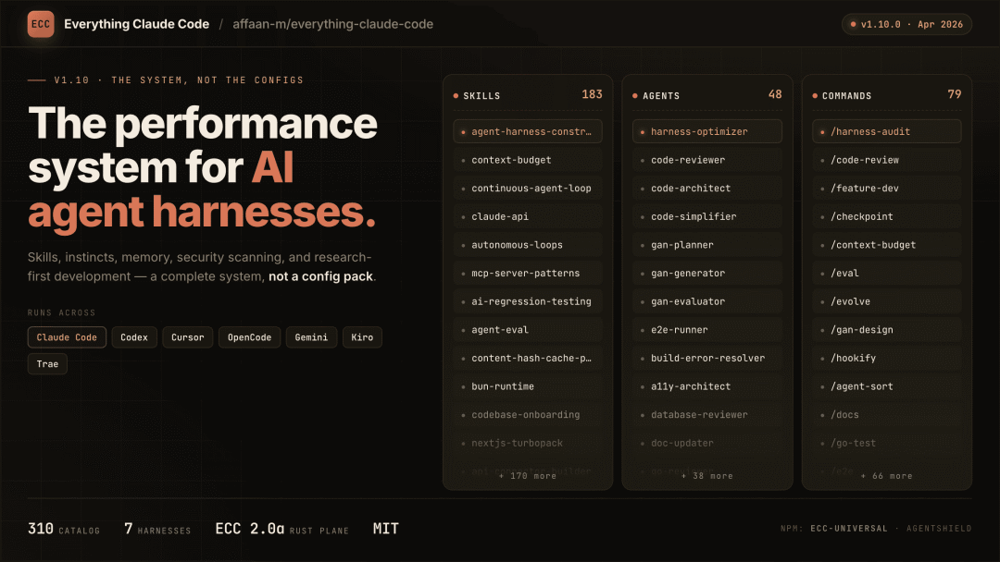
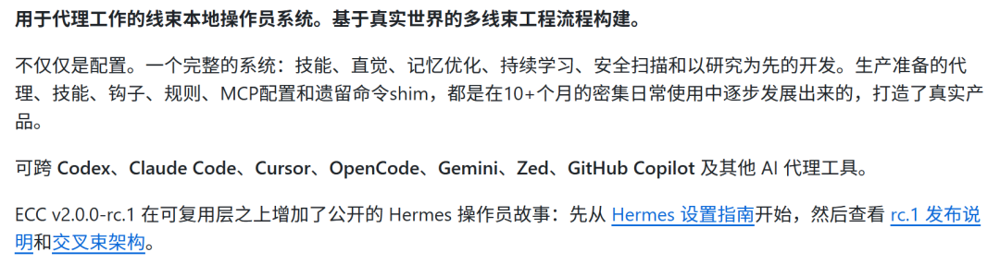
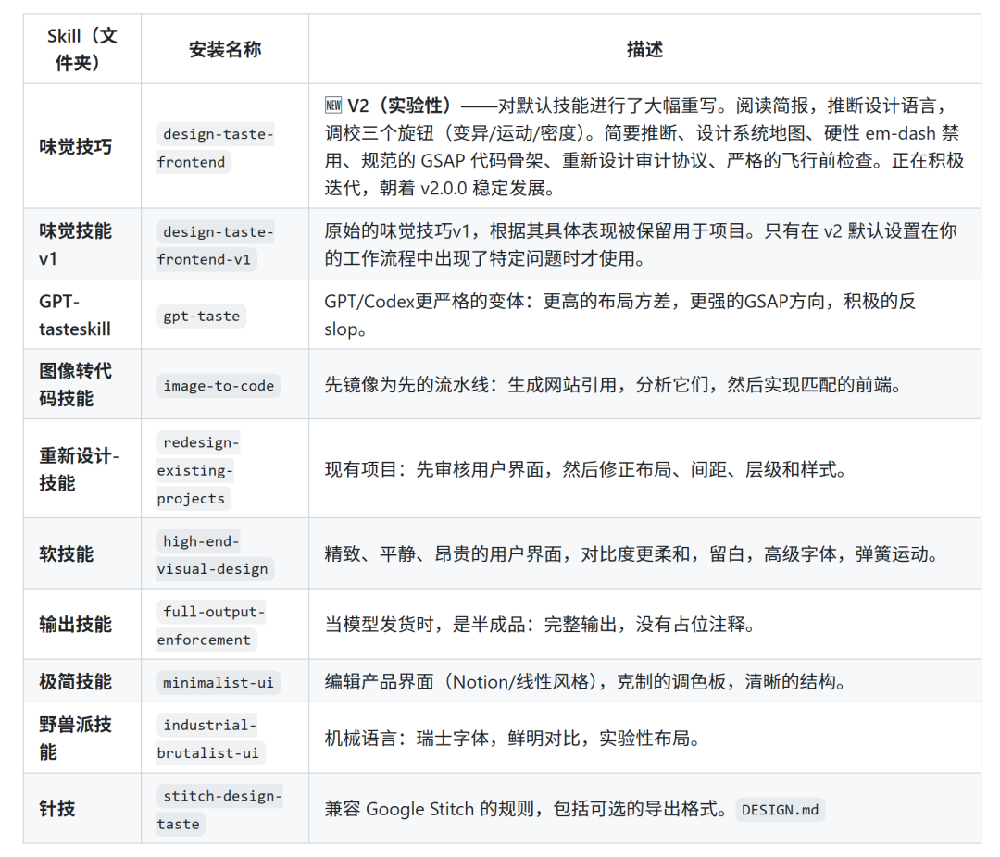
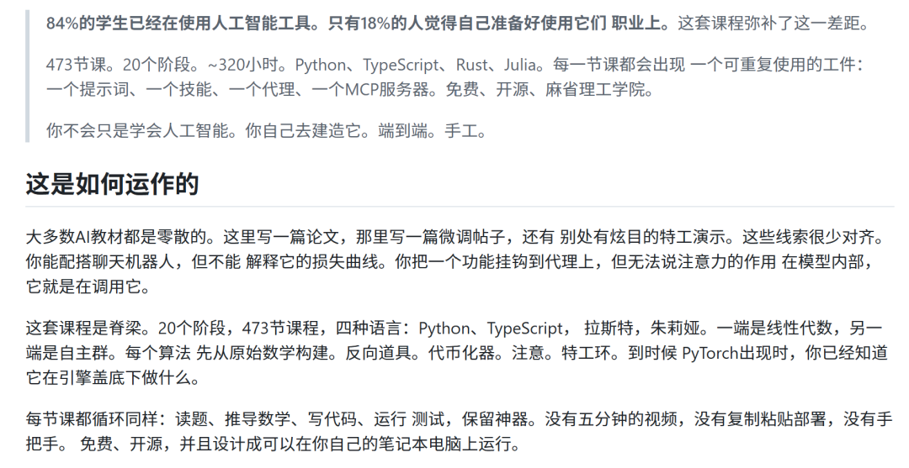
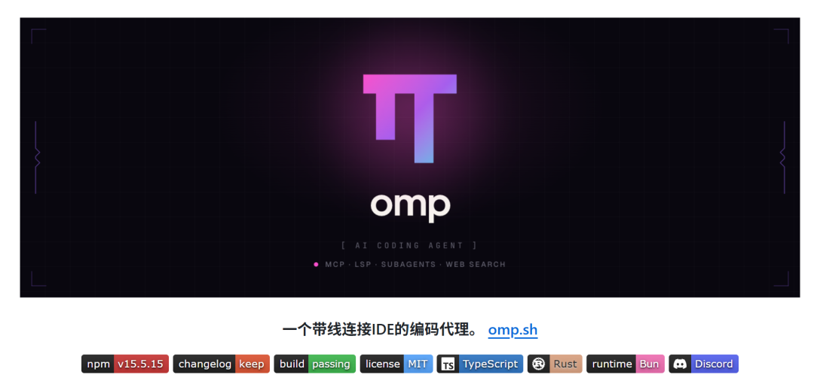
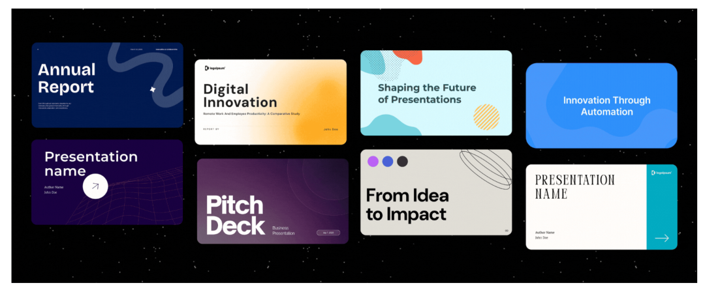

感谢大家对GitHub系列内容的支持。周热榜系列以后会每周一更，大家敬请期待~
我们回到本期内容。
上周推荐的 Understand-Anything 和 Codegraph 还在 Trending 第一和第四，分别又涨了 2.6 万和 1.9 万 Star。
说明代码图谱这个方向确实踩中了痛点。
这周的 Trending 比上周更有意思：
出现了一个 19.8 万 Star 的怪物，Anthropic 自己也下场发了两个官方仓库，还有一个中国开发者做的 AI 视频工具冲到了第二。
01
19.8 万 Star，给 AI 编程装一套“操作系统”
ECC，19.8 万 Star，本周 GitHub Trending 总榜第一。

这个东西我犹豫了很久要不要写，因为它太大了，看起来也有点复杂：
63 个子 Agent、249 个 Skills、79 个命令，覆盖 Claude Code、Codex、Cursor、Gemini CLI、GitHub Copilot 七个平台。光 README 就有好几万字。
但它确实是目前 GitHub 上 Star 最多的 AI 编程相关项目，没有之一。
它做的事情用一句话概括：给你用的 AI 编程工具装一套“操作系统”。
包括任务规划（先想清楚再动手）、TDD 工作流（写测试再写代码）、代码审查、安全扫描、自动学习你的编码习惯——全都是自动化的。

打个比方，你用 Claude Code 的时候，它就是一个没有纪律的天才程序员。聪明，但容易跑偏，你得盯着。装上 ECC 之后，等于给它配了一个项目经理、一个代码审查员、一个安全审计员，还有一套自动记录经验的工作流。
我自己装了试了一下，最大的体感变化是两个：
第一，它会自动在对话开始的时候加载你项目的上下文，不用你每次重新交代背景；
第二，写完代码自动跑测试，不过就打回来重写，不用你手动盯着。
安装一行命令搞定：
/plugin marketplace add https://github.com/affaan-m/ECC
/plugin install ecc@ecc
坑也有：这个项目太大了，全装会吃掉很多上下文。建议只用 minimal 模式，按需加语言包。不要叠加多种安装方式，会冲突。
开源地址：https://github.com/affaan-m/ECC
02
一个关键词，生成一条完整的短视频
MoneyPrinterTurbo，6.9 万 Star，这周冲到了全球第二。
这是一个中国开发者做的项目，特别适合做抖音和小红书的人。
怎么用？
你输入一个视频主题或者关键词，比如“如何提高专注力”，它会全自动生成：
视频文案 → 配音 → 字幕 → 背景音乐 → 匹配高清素材 → 合成一条完整的短视频。
竖屏横屏都支持，中文英文都能写。支持批量生成，一次出好几条你挑一个最满意的。
它不是什么概念 Demo，是真的能用的。
配音有微软 Edge TTS 和 Azure 两套引擎，字幕可以自定义字体、颜色、大小、位置。素材来源是无版权的高清视频库，不用担心侵权。
大模型支持 DeepSeek、Moonshot、通义千问、Gemini 等十几种。
中国用户建议直接用 DeepSeek 或 Moonsky，国内直连，注册就送额度。
有 Web 界面和 API 两种模式。Windows 还有一键启动包，解压就能用。
来看几个官网的案例，真实性不用多说，还是非常逼真：
开源地址：https://github.com/harry0703/MoneyPrinterTurbo
03
让 AI 写出来的东西不再像 AI
taste-skill，2.8 万 Star。
这个项目的名字就很直白：给你的 AI 装上“品味”。
用 AI 生成前端界面的人都有个体感：做出来的东西看着都一个样。居中的标题，一样的卡片布局，一样的蓝色渐变，像一个模子刻出来的。俗称 AI 味。
taste-skill 就是为了解决这个问题。
它不是改你的代码，而是教 AI 什么是好的设计：
更强的排版节奏、更合理的间距、更自然的动效，而不是千篇一律的模板感。
它有三个可以调的旋钮：布局实验性、动效深度、信息密度。数值调低就是干净克制风（Notion 那种），调高就是大胆实验风。
除了默认的，还有几个变体：极简风、工业风、高端软奢风，以及一个专门给 ChatGPT/Codex 用的严格版。
里面包含了这么多skill可以慢慢探索：

只需要安装一行命令即可：
npx skills add https://github.com/Leonxlnx/taste-skill
支持 Codex、Cursor、Claude Code。
开源地址：https://github.com/Leonxlnx/taste-skill
04
Anthropic 官方插件目录，精选的
claude-plugins-official，2.8 万 Star，Anthropic 官方出品。
这是 Anthropic 自己管理的 Claude Code 插件目录。不是社区随便提交的，是官方筛选过的高质量插件集合。
之前装插件你得满 GitHub 找，找到的还可能是过时的或者质量参差不齐的。现在有了一个官方入口，至少质量有保障。
对于刚上手 Claude Code 的同学，先从这里面装几个基础插件，比自己到处找靠谱。
开源地址：https://github.com/anthropics/claude-plugins-official
05
一周涨了 1.3 万 Star，学 AI 工程从零开始
ai-engineering-from-scratch，2.4 万 Star，这周涨了 1.3 万，增速非常猛。
一个系统化的 AI 工程学习路线。
不是那种“30 天精通 AI”的水课，是真正的从基础概念到实战项目的完整路径。
涵盖的内容包括：机器学习基础、神经网络原理、Transformer 架构、大模型训练和微调、RAG、Agent 开发、MLOps 部署。每一部分都有代码示例和练习。

适合两种人：一是想系统学 AI 工程的转行者，二是已经会一点但想查漏补缺的人。
开源地址：https://github.com/rohitg00/ai-engineering-from-scratch
06
Anthropic 官方：给知识工作者做的插件
knowledge-work-plugins，1.8 万 Star，Anthropic 官方出品第二个。
这个跟上面那个不一样。上面是通用插件目录，这个专门给知识工作者做的：不做开发、不写代码的人。
文章写作、内容改写、市场调研、邮件处理、日程管理这些场景。
也就是说，用 Claude Cowork 做日常办公的人，可以直接用这些插件提效。
我觉得这个信号比项目本身更重要：Anthropic 在认真做非开发者的市场。
开源地址：https://github.com/anthropics/knowledge-work-plugins
07
754 个网络安全 Skill，给 AI 装上安全专家
Anthropic-Cybersecurity-Skills，1.2 万 Star。
754 个结构化的网络安全技能，映射到 MITRE ATT&CK、NIST CSF 2.0、MITRE ATLAS 等五大安全框架。覆盖 26 个安全领域。
支持 Claude Code、GitHub Copilot、Codex CLI、Cursor、Gemini CLI 等 20 多个平台。
做安全审计的人可以关注。就算不做安全，里面的一些方法论：比如怎么系统性地检查一个项目的安全风险，也值得学习。
开源地址：https://github.com/mukul975/Anthropic-Cybersecurity-Skills
08
终端里的 AI 编程新选手
oh-my-pi，8,458 Star。

又一个新的终端 AI 编程工具。跟 Claude Code、Codex 是同类，但有些不同的设计思路：哈希锚定编辑（只改该改的地方）、LSP 集成（直接读取语言服务器的诊断信息）、内置浏览器、子 Agent 支持。
比较有意思的是它强调“轻量”：不像 ECC 那样大而全，它走的是精简但高效的路线。
还比较新，但值得关注。终端 AI 编程这个赛道现在是真正的红海。
开源地址：https://github.com/can1357/oh-my-pi
09
开源版的 Gamma，AI 自动生成 PPT
presenton，7,490 Star。
Gamma 的免费开源替代品。输入主题，自动生成完整的演示文稿.
布局、排版、配色全部自动完成。同时提供 API，可以接到自己的产品里。
支持导出为多种格式。TypeScript 写的，部署比较方便。
如果你经常做 PPT 又不想花钱买 Gamma，可以试试。
感觉效果还是蛮不错：

开源地址：https://github.com/presenton/presenton
10
一个关键词生成视频，导演编剧制片全自动化
ViMax，8,281 Star。
最后一个也是做视频的，但跟第 2 个不一样——MoneyPrinterTurbo 是拼素材，ViMax 是生成。
它的定位是“导演、编剧、制片、视频生成器合一”。
你给一个主题，它自己写剧本、设计分镜、生成视频画面、配上旁白和音乐。全流程自动化，不需要你介入任何环节。
跟上周提到的 Supertonic（文字转语音）配合使用效果会更好。
虽然项目目前还在早期阶段，但“AI 视频全流程自动化”这个方向，2026 年下半年大概率会迎来爆发。
来看看官方案例效果：
开源地址：https://github.com/HKUDS/ViMax
写在最后
本周最推荐三个：
想快速出短视频的：MoneyPrinterTurbo，中国开发者做的，中文体验最好，开箱即用。
用 Claude Code 的：ECC，Star 数说话，19.8 万不是假的。但记得用 minimal 模式。
做前端的：taste-skill，一行命令装上，立竿见影。
另外注意到一个趋势：
Anthropic 这周同时上了两个官方仓库（04 和 06），加上上周的 Claude Code 自己也在 Trending，说明 Anthropic 正在加速建设 Claude Code 的生态。
同时，Cursor 也发了自己的插件规范（本周 1,293 Star）。
AI 编程工具的“插件大战”已经开始了。
---------END--------
这里是【AI圈儿】，和一群人一起读懂AI。
欢迎+vx：KyroMa进入专属听友群⭐